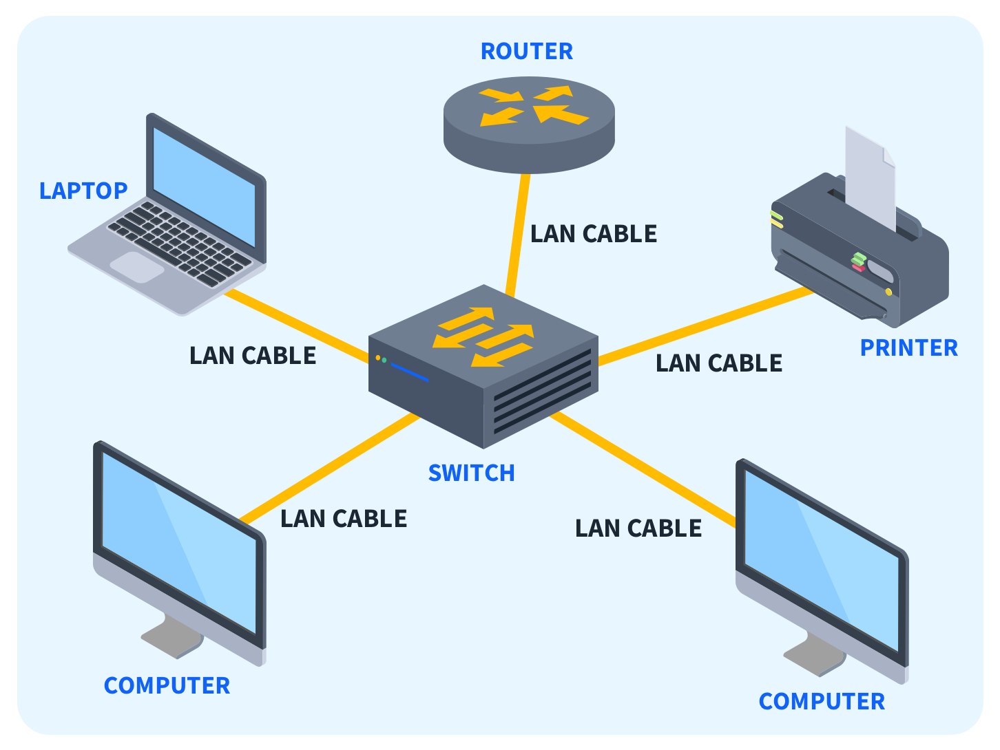

The Information Shed
How do I connect to my interent?
Connecting to your network can be as simple as typing in a few characters in a string known as a wifi password.
These are commonly used in mesh networks that are usually found in households and through wireless connections.
But why do we use a mesh connection? Why shouldn't we?
Mesh connections
[See figure]
are all interconnected either through a partial or full mesh. Some advantages of mesh networks include:
It is easy to connect new devices to the network
Unlike other networks, this one will still function properly even when 1 device fails.
Efficient as there are few data collisions with the more direct routes for data passage.
This network, as said before, uses a password. This can make it especially secure form malicious files or packets.
On the other hand, as I said before, mesh networks do require encrption to maintain their security; this added layer of complexity may make it undesireable under some circumstances.
Once your device has been connected to a network, it will run packet information from the device's NIC(Network Interface Card) and to it's correspondinng router.
[See figure]
A packet consists of details following the architecture seen in . In terms of software requirements, you will typically need some sort of operating system on your device which can support network connections. Additionally, most devices will use some form of
driver which enable your device to communicate with your network.
Wired Connections
Popular wired networking formats include star or extended star networks.
[See figure]
These consist of many stations(computers) all connected to a central hub/switch which, in an extended star, are in turn
connected to a server. All information moves from a station, to a hub and then to a server where it's destination is determined. This method comes with many advantages, namely:
Due to the use of hub connections, it is easier to connect new devices. The only drawback of this factor would be the price of the wiring
This system can still function even if 1 device fails, if the server or a hub fails then the whole network may fall too.
More direct routes between stations through hubs means that data transfer is more effficient and less data is lost through collisions.
Wired connections tend to be faster than wireless ones due to the use of more direct connections.
On the otherhand, some disadvantages associated with star networks include:
System costs; wires, servers and hubs/switches all contribute to an enormous price.
May require skilled labour from a network manager to continue running the system without crashes or errors.
Wires
What sort of wires do I need for a wired connection? Typical wires include the CAT series of cables. These are individual ethernet cables that vary based on the transmission speed
through the wire. This factor can in turn directly impact the price of the wire per metre. For example a CAT5 cable.
[See figure]
As mentioned
earlier, can be expensive with this specific example coming in at approximately £0.80/metre. The latest installation, CAT-8, can cost ~£1.30/metre. These ethernet cables are
inserted directly into the ethernet port on your device's NIC to provide a direct connection between the device and the hub, switch or server.
What is a LAN?
A LAN is a Local Area Network
[See figure]
. These are networks that are geographically confined to one building or site, such as your household wifi connection. Just as you may expect,
a LAN consists of cables, access points, switches, routers, and other components that enable devices to connect to internal servers and web servers. These include UTP cables, fibre optics or wireless data.
The hardware used in a LAN network service is usually owned by the operators rather than from 3rd party firms.
This varies from WAN, Wide Area Network, as these network types consist of many LANs interconnected through telephone lines or other forms of electronic infastructure.
The infastructure used in a WAN network is commonly leased out by larger telecommunication companies.
Why should I do networking?
Networking can offer some advantages whilst on the internet or working in a team. Some advantages could include:
Folders and files can be stored on a server, meaning that they can be accessed by all users on a network.
Internet connections means that users can easily send information betweeen devices via Email or other messaging programms.
User profiles can be manages centrally.
Software can be distributed across a network.
All files are backed up centrally.
On the other hand, some disadvantages of networking could include,
Managing networks is complicated
Viruses may be able to infiltrade all devices on a network.

 .
.